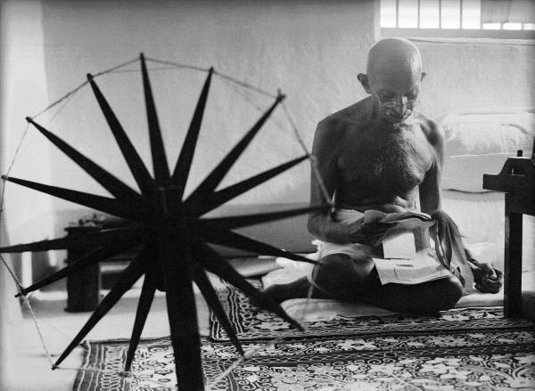
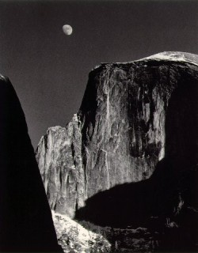
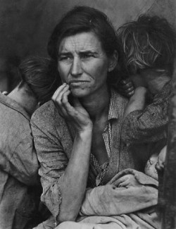
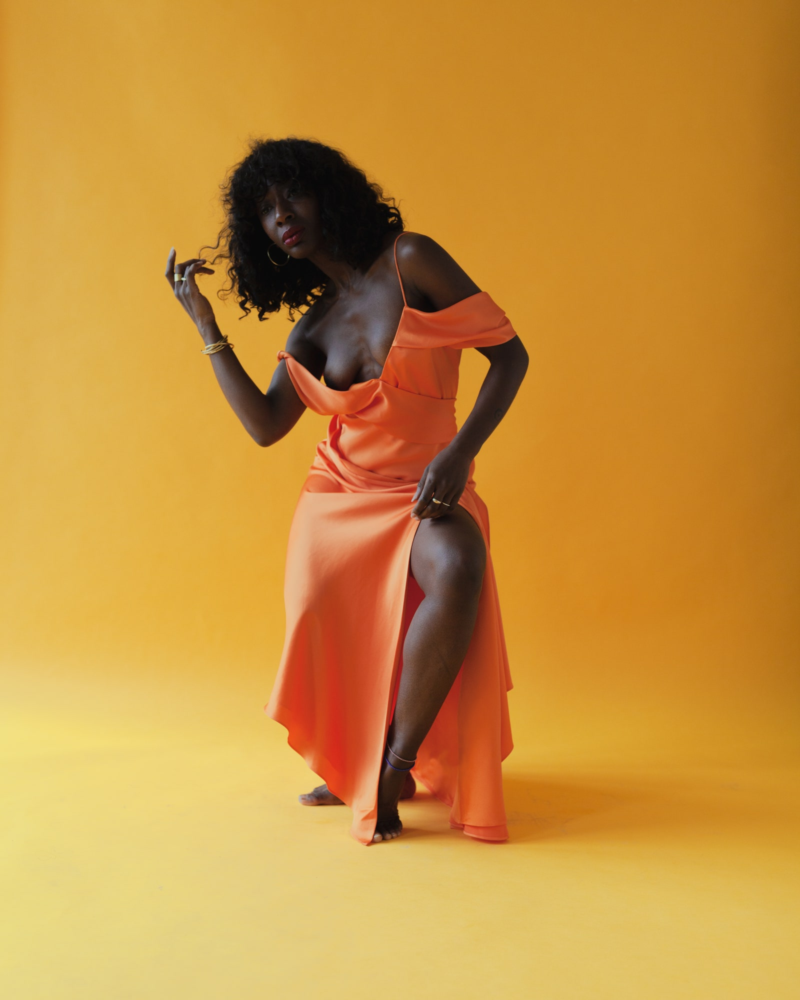

Margaret Bourke-White - an iconic photojournalist for LIFE magazine, she took the last picture of Ghandi prior to his assassination.

Ansel Adams - while not a women or POC, he's best known for his landscapes and nature photographs, he created The Zone System with Fred Archer which is a "complex system for creating the correct exposure using black and white films and papers."

Dorothea Lange - another famous photojournalist, she is best known for photographs taken during the Great depression. These photos "humaniz[ed] the plight of the workers and those most affected by the depression"Melissa Alcena - “I think there’s inspiration to be had wherever you are, if you make efforts to look for it. My focus for the past few years has been in creating an interest in the working class Bahamian and in those who I feel are overlooked in our society.”

Myesha Evon - "My work examines cultural, social and personal experiences while redefining themes of legacy, love, and labor within the Black community."